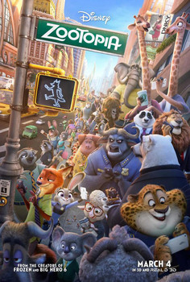
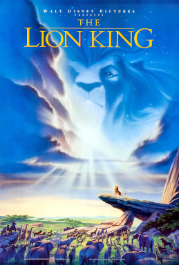
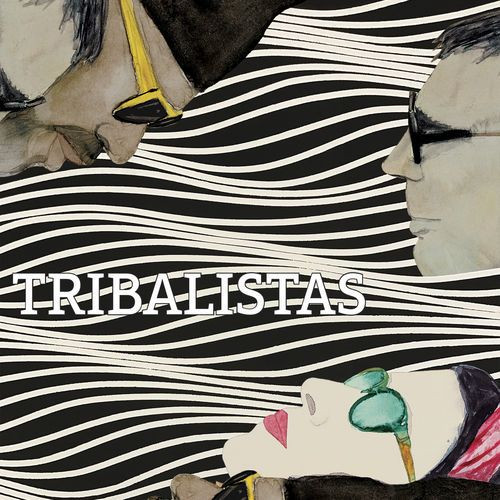
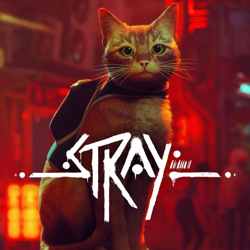

Filmes e Séries

Moana é um filme animado da Disney que conta a história de uma jovem polinésia que sonha em explorar o mar.

Zootopia é um filme de animação que se passa em uma cidade habitada por animais antropomórficos, onde uma coelha policial e uma raposa vigarista se unem para resolver um mistério.

The Lion King é um filme de animação da Disney que conta a história de um jovem leão que deve assumir o trono da savana.
Filmes e séries são ótimas formas de entretenimento e ajudam a conhecer novas histórias e culturas.
Música e Podcasts

Ao compor a música ainda na adolescência, a artista traz uma sinceridade direta ao descrever como o toque e o olhar se tornam formas de explorar e se aproximar do outro, como nos versos: “Your freckles lead the way / I trace your constellations” (Suas sardas mostram o caminho / Eu traço suas constelações).

A música mostra que se deixar levar por alguém pode ser uma experiência de autodescoberta e aventura.

A letra não se limita a descrever um romance, mas cria um ambiente de sonho, onde o encontro com a pessoa amada é visto como um momento especial, cheio de esperança e expectativa.
A música e os podcasts fazem parte do dia a dia, trazendo diversão, informação e inspiração.
Games e Tecnologia

Red Dead Redemption é um jogo de ação e aventura de mundo aberto lançado em 2010 pela Rockstar Games, desenvolvido pela Rockstar San Diego.

Stray é um jogo de aventura e exploração em terceira pessoa desenvolvido pela BlueTwelve Studio e publicado pela Annapurna Interactive. O jogo foi lançado em 19 de julho de 2022 para Microsoft Windows, PlayStation 4 e PlayStation 5.

The Last of Us Part II é um jogo de ação e aventura desenvolvido pela Naughty Dog e publicado pela Sony Interactive Entertainment. O jogo foi lançado em 19 de junho de 2020 para PlayStation 4.
Games e tecnologia evoluem constantemente e fazem parte do entretenimento digital moderno.